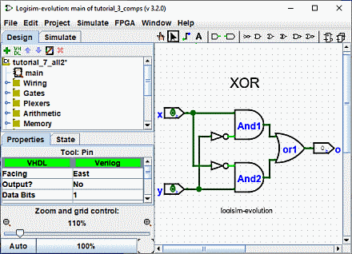
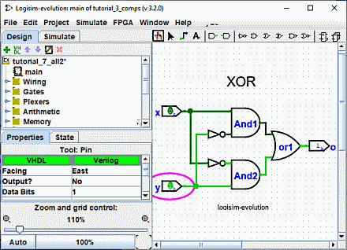

上一节：第 3 步：添加文本
第 4 步：测试电路
我们的最后一步是测试电路，确保它确实能实现我们的预期。Logisim 已经在仿真该电路。让我们再回顾一下当前状态。

注意，两个输入引脚都包含 0；输出引脚也是如此。这已经告诉我们，当两个输入都为 0 时，电路计算出 0。
现在尝试另一种输入组合。选择 “手形”工具（ ），然后点击输入引脚进行测试。每次点击一个输入引脚，它的值都会切换。例如，可以先点击底部输入（y）。
），然后点击输入引脚进行测试。每次点击一个输入引脚，它的值都会切换。例如，可以先点击底部输入（y）。

更改输入值时，Logisim 会通过绘制浅绿色（表示 1 值）或深绿色（几乎黑色，表示 0 值）来显示导线上传输的值。还可以看到输出值已变为 1。
到目前为止，我们已经测试了真值表的前两行，输出（0 和 1）与期望输出匹配。
| x | y | x 异或 y |
|---|---|---|
| 0 | 0 | 0 |
| 1 | 0 | 1 |
| 0 | 1 | 1 |
| 1 | 1 | 0 |
通过使用手形工具点击输入引脚的不同组合，我们可以验证其他两行。如果全部匹配，那么我们就完成了：电路工作正常！
如果想保存完成的作品，可以保存或打印电路。| 文件 |菜单可以完成这些操作，当然也可以退出 Logisim。不过现在还没必要退出。
下一节： 第 5 步：单步模式